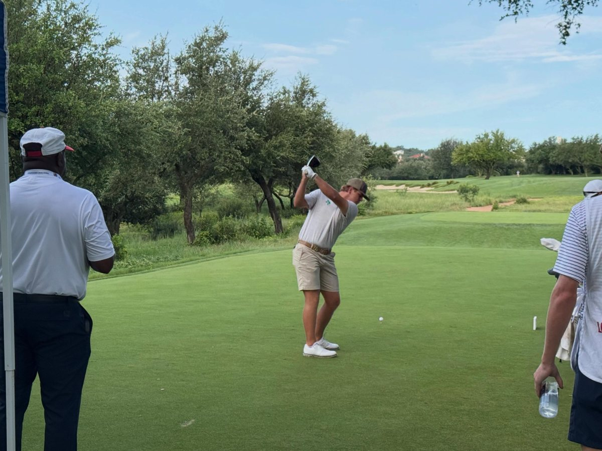
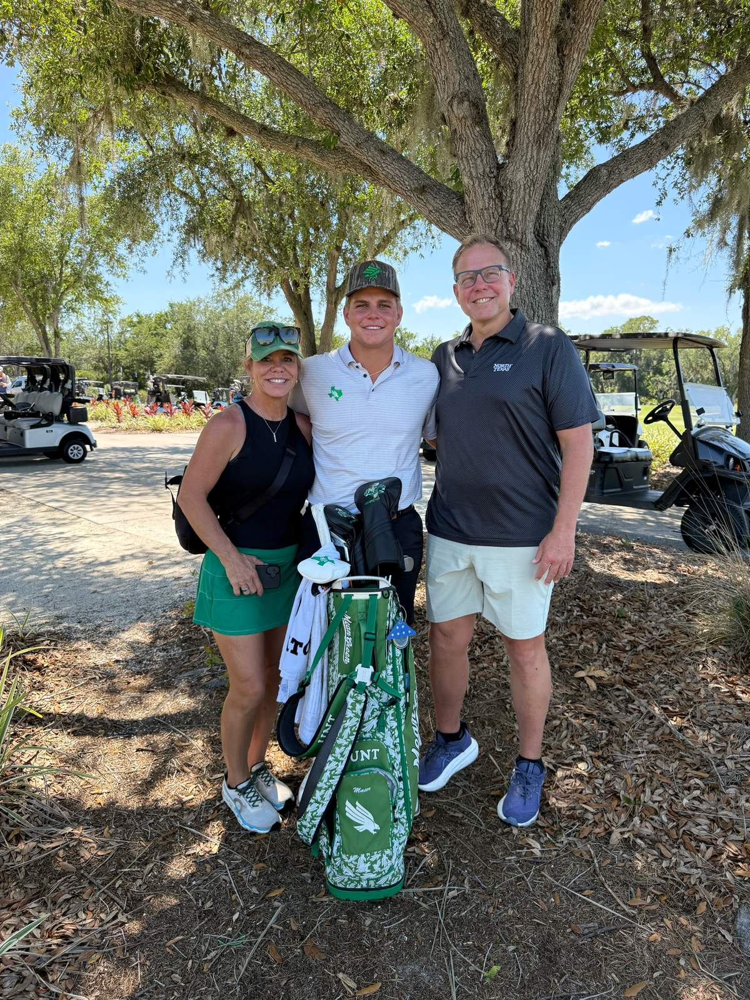
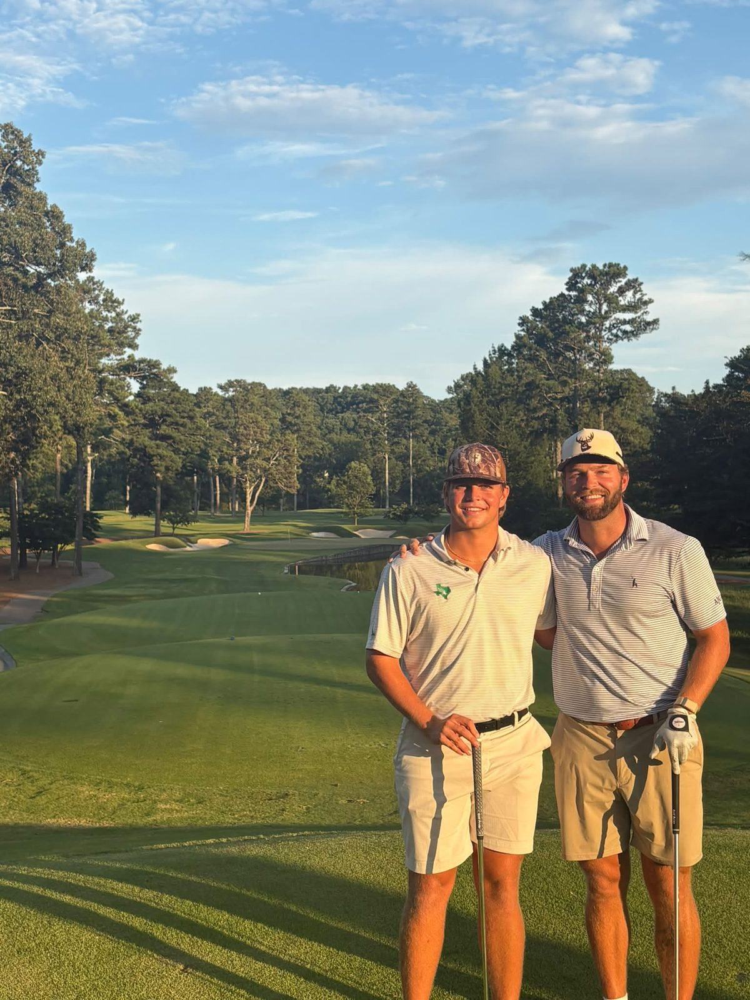
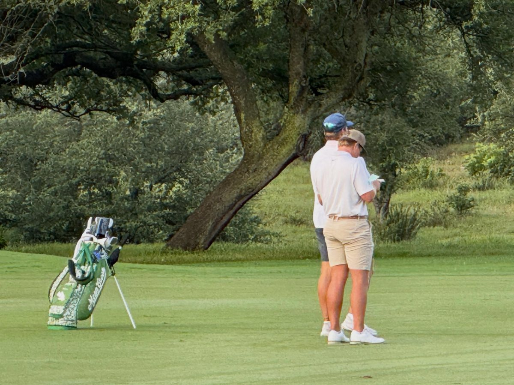
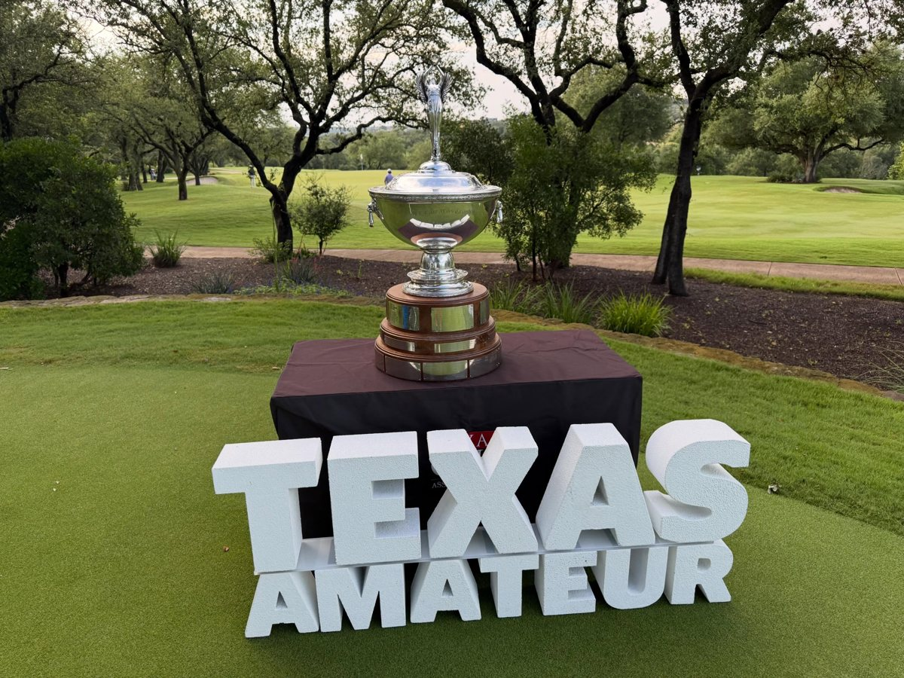
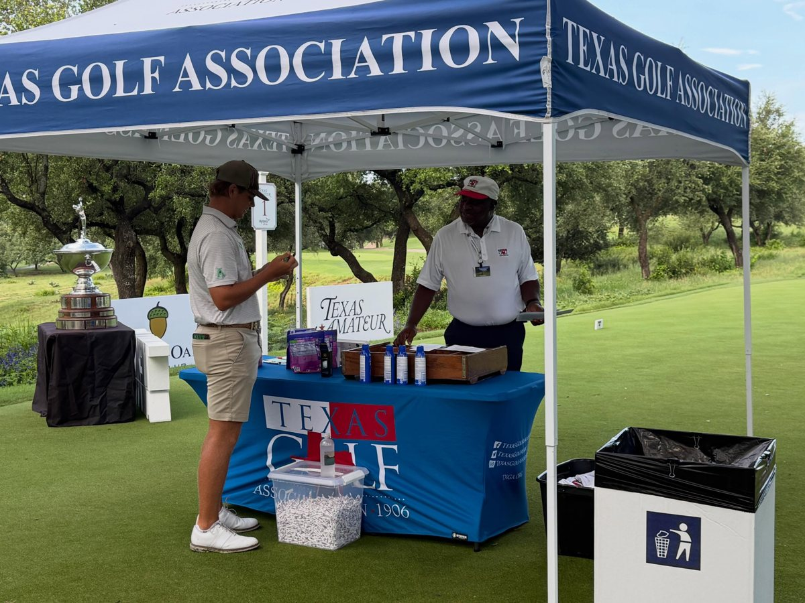

- School
- University of North Texas
- Class
- Sophomore (2nd year)
- Hometown
- Richmond, Texas
- High school
- George Ranch High School
- Coaches
- Head coach Luke Calcatera · Assistant coach Joseph Kirk
Mitchell Maier is a sophomore on the North Texas men’s golf team from Richmond, Texas, and a graduate of George Ranch High School.
As a freshman in 2025-26 he started all 11 tournaments and led the Mean Green with a 72.67 stroke average, six top-20 finishes, five rounds in the 60s, 122 birdies and six eagles. He was UNT’s highest finisher six times. He was named the 2026 American Conference Freshman of the Year, the program’s fourth conference Freshman of the Year, and was the only freshman in the American to make the All-Conference team.
His best week came at the 2026 American Conference Championship. He shot 67-67-70 (204, −12) to tie for third, which matched the program’s best 54-hole score ever at a conference tournament. He opened his sophomore fall with a T3 at the Argent Financial Classic (71-69-70, −6), where he was the only player in the field with multiple eagles.
⛳ A proud GolfMDVIP athlete.
Honors & distinctions
- 2026 American Conference Freshman of the Year source
- 2026 American Conference All-Conference Team (the only freshman selected) source
- T3 at the 2026 American Conference Championship. His 204 (−12) matched UNT’s best 54-hole score at a conference tournament source
- Led UNT in 2025-26 with a 72.67 stroke average, 122 birdies, 6 eagles and 5 rounds in the 60s source
- Shot UNT’s lowest 18-hole score of 2025-26: a third-round 65 at the Argent Financial Classic in his college debut source
- T3 at the 2026 Argent Financial Classic and the only player in the field with multiple eagles source
- World Amateur Golf Ranking: No. 2,998, best No. 2,940 (October 2026) source
Results by season
2026-27 · Sophomore (fall)
| Event | Date | Finish | Scores | Source |
|---|---|---|---|---|
| The Clerico (team 11th of 13) | Oct 19–20, 2026 | T52 | 79-79-68 = 226 (+16), closing 68 (−2) | Source |
| Blessings Collegiate Invitational | Oct 3–5, 2026 | T18 | 72-78-76 = 226 (+10) | Source |
| Argent Financial Classic | Sep 27–29, 2026 | T3 | 71-69-70 = 210 (−6) | Source |
| Island Resort Intercollegiate | Sep 6–7, 2026 | T27 | 71-70-75 = 216 (E) | Source |
2025-26 · Freshman
| Event | Date | Finish | Scores | Source |
|---|---|---|---|---|
| American Conference Championship | Apr 27–29, 2026 | T3 | 67-67-70 = 204 (−12) | Source |
| Mossy Oak Collegiate | Apr 13–14, 2026 | T37 | 75-73-73 = 221 | Source |
| Maridoe Collegiate | Mar 30–31, 2026 | T36 | 82-75-75 = 232 (+16) | Source |
| All-American Intercollegiate | Mar 16–17, 2026 | T19 | 75-78-74 = 227 | Source |
| Louisiana Classics | Mar 9–10, 2026 | T40 | 74-71-71 = 216 | Source |
| Border Olympics | Feb 16–17, 2026 | 14 | 67-70-77 = 214 | Source |
| Compadres Collegiate | Feb 1–3, 2026 | T12 | 77-74-72 = 223 | Source |
| Everett Buick GMC Classic | Oct 13–14, 2025 | T25 | 73-69-72 = 214 | Source |
| Trinity Forest Invitational | Oct 5–7, 2025 | T73 | 76-73 = 149 (+5), as listed in UNT’s recap | Source |
| William H. Tucker Invitational | Sep 19–20, 2025 | T19 | 73-70-70 = 213 | Source |
| Argent Financial Classic (college debut) | Sep 7–9, 2025 | T7 | 73-70-65 = 208 (−8) | Source |
Junior & amateur highlights
- Champion, 2024 Legends Junior Tour Texas Cup Invitational source
- 2nd, LJT George Hannon Invitational source
- 5th, Byron Nelson Junior Championship source
- T2, 2022 AJGA C.T. Pan Junior Championship (73-75-69 = 217) source
- 5th, 2022 AJGA Coca-Cola Junior Championship at The Highlands (69-70-67 = 206, −10) source
Team highlights
- No. 60 nationally in Scoreboard by Clippd (updated Oct 14, 2026) source
- Three top-3 team finishes this fall: 3rd at Island Resort, 2nd at Argent Financial and 3rd at Blessings source
- Shot a 274 at the Argent Financial Classic, the best team round in the field and UNT’s best since 2023 source
- Fall finale: 11th of 13 at The Clerico (Oct 19–20, Cedar Ridge CC, Broken Arrow, Okla.). Mitchell closed with a 2-under 68 source
- Fall season complete. Next: Compadres Collegiate, Feb 7, 2027 (live scoring will be posted here when it starts) source
From the GolfDoc’s feed
Photos from Michael’s family album and public Facebook posts. Tap a linked photo to open its post.





Links
#MitchellMaier #MeanGreenMensGolf #MeanGreenAthletics #GMG · Every result above links to its official source. Last checked Oct 25, 2026.